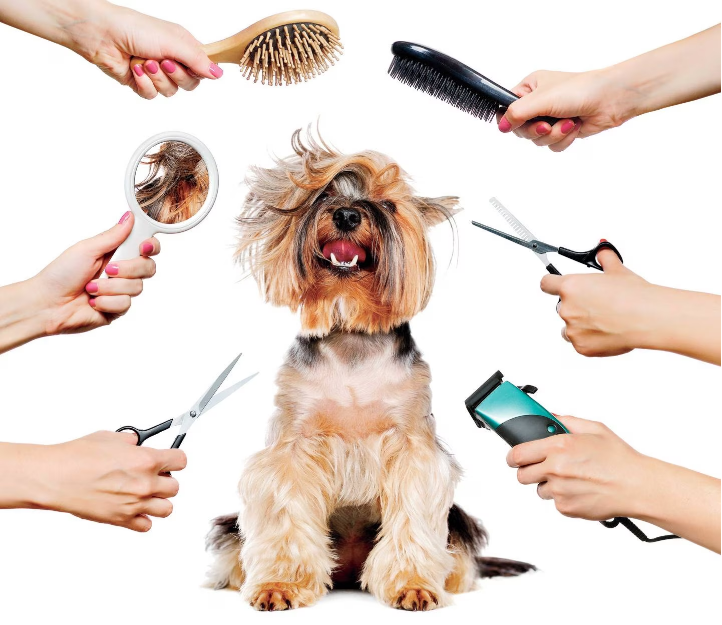

INICIO
PRODUCTOS
SERVICIOS
CONOCENOS
CONTACTO
NUESTROS SERVICIOS
VETERINARIA
Consultas Veterinarias:
Nuestros veterinarios están disponibles para brindar consultas de rutina, así como para atender cualquier problema de salud que pueda surgir.
Vacunación:
Mantén a tu mascota al día con las vacunas necesarias para protegerla de enfermedades comunes.
Cirugía:
Realizamos procedimientos quirúrgicos con los más altos estándares de seguridad y cuidado.
Hospitalización:
En caso de enfermedad grave o cirugía, ofrecemos instalaciones de hospitalización con supervisión constante.
Análisis de Laboratorio:
Contamos con laboratorio propio para realizar análisis de sangre, orina y más.
Dentista para Mascotas:
Cuidamos la salud dental de tu mascota con limpiezas y extracciones cuando sea necesario.
Nutrición:
Recibe asesoramiento sobre la dieta adecuada para tu mascota y recomendaciones de alimentos de calidad.
Cuidado Preventivo:
Te proporcionamos consejos y tratamientos para prevenir problemas de salud antes de que ocurran.

PELUQUERÍA CANINA
Baño y Secado:
Ofrecemos baños relajantes y secado cuidadoso para mantener la piel y el pelaje de tu perro limpios y saludables.
Corte de Pelo:
Nuestros estilistas caninos son expertos en cortes de pelo que resaltan la belleza natural de tu perro.
Corte de Uñas:
Mantén las uñas de tu perro en buen estado para su comodidad y salud.
Limpieza de Oídos:
Eliminamos el exceso de cerumen y evitamos problemas de oído.
Higiene Dental:
Cuidamos la salud dental de tu mascota con limpiezas y productos específicos.
Tratamientos Especiales:
Si tu perro tiene necesidades especiales, como tratamientos para la piel o el pelaje, estamos aquí para ayudar.